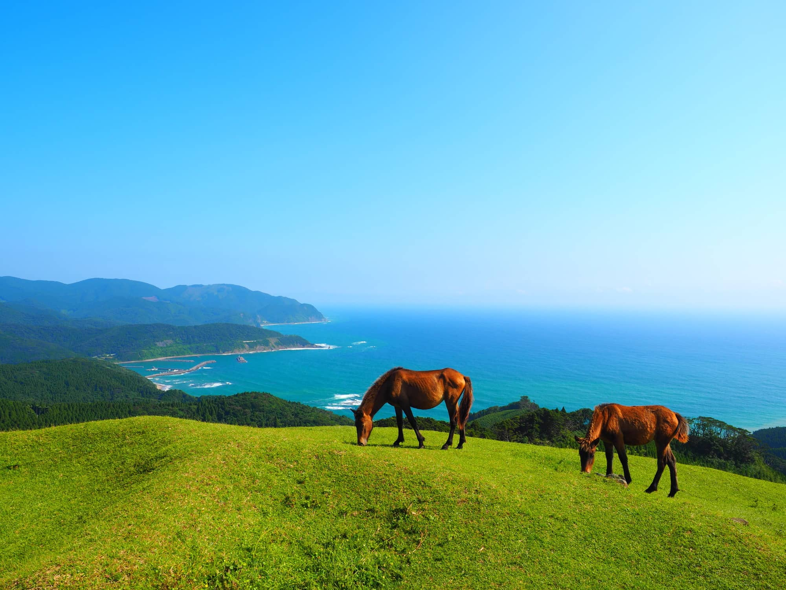

都井岬
宮崎県の最南端に位置する都井岬は、国の天然記念物である野生馬「御崎馬（みさきうま）」が生息することで知られています。広大な草原を馬たちが自由に駆け巡る姿は、訪れる人々を魅了します。また、先端には九州で唯一内部を見学できる都井岬灯台が立ち、太平洋の壮大なパノラマを一望できます。
基本情報
住所: 宮崎県串間市大納御崎
アクセス: JR串間駅からコミュニティバスで約40分 / 宮崎自動車道・田野ICから車で約1時間30分
開館時間: 散策自由 ※駒止めの門の開門時間は時期により異なります。都井岬灯台は有料で開館時間が定められています。
料金: 岬への入場時に野生馬保護育成協力金として自動車400円、バイク100円が必要です。
公式サイト: 串間市観光物産協会